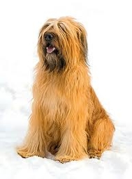

<? title('Бриар') ?>
<table border="0" class="layout">
    <colgroup span="1"><col width="15%" span="1"></col><col width="25%" span="1"></col><col width="60%" span="1"></col></colgroup> 
    <tbody>
        <tr>
            <td valign="top">
                <div class="holster">
                    <div class="block_container s3 b-text b-static-text user_css_128160066548" id="e_127779567450">
                        <p><em><strong>Зотовы Андрей и Ирина</strong></em></p>
                        <p>тел.747-74-11<br /><strong>заходите к нам в <a href="http://www.potap-hotel.ru/">гости</a></strong></p>
                    </div>
                    <div class="block_container s3 b-image txt-center" id="e_1282644522447"><span></span></div>
                </div>
            </td>
            <td>
                <div class="holster">
                    <div class="block_container s3 b-text b-static-text user_css_128160066548" id="e_128264428654">
                        <p style="text-align: center;"><span style="color: #3366ff;"><strong>Бриар</strong></span></p>
                        <p style="text-align: justify;"><span style="color: #3366ff;"><strong>Из истории породы :</strong> Эта порода существовала уже несколько столетий назад (известно, что у Карла Великого были бриары), однако популярной она сделалась лишь после Парижской выставки собак в 1863 году, где был представлен уже улучшенный вариант породы, полученный в результате скрещивания с босероном и барбе. Некоторые бриары до сих пор сохранили свои пастушьи и охранные инстинкты, но другие, воспитанные как просто домашние любимцы, достаточно робки с незнакомцами. </span><span style="color: windowtext;"><br /><span style="color: #3366ff;"><strong>Общая характеристика породы:</strong> бриары - добродушные собаки, которых устраивают и роль домашнего любимца, и служебные обязанности на сельском дворе. Многие из них успешно выступают на выставочных рингах. Он хорошо дрессируется и ладит с детьми. Это спокойная и не лающая без причины собака, недоверчива к посторонним и при необходимости может быть злой и агрессивной. Бриар - энергичная и инициативная собака, умна и ласкова с уравновешенной психикой. Вообще, бриар - очень красивая собака с прекрасным характером. Говорят, что любовь, отданную ей, она возвращает в десятикратном размере. <br /><strong>Содержание и уход: </strong>Необходимы длительные прогулки, и лучше бы не просто гуляние по дорожкам парка. Регулярно чистите собаку щёткой. Впрочем, бриар неплохо приводит себя в порядок сам. </span></span></p>
                        <p style="text-align: justify;"><span style="color: #3366ff;"><strong>Размеры:</strong> рост 59-69 см (кобели), 56-65 см (суки). </span></p>
                        <p style="text-align: justify;"><span style="color: #3366ff;">____________________________________________</span></p>
                        <p style="text-align: justify;"><a href="http://www.dog.blister.ru/"><span style="color: #3366ff;">&nbsp;</span></a></p>
                    </div>
                </div>
            </td>
        </tr>
    </tbody>
</table>​